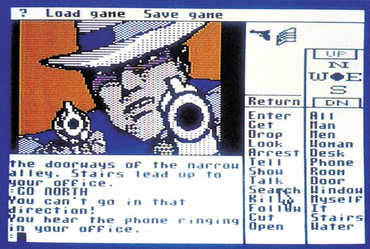
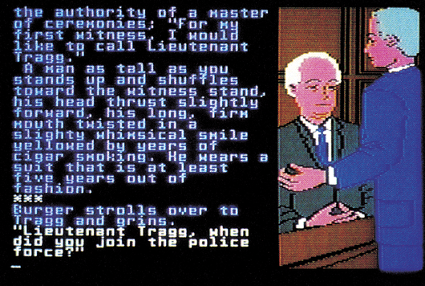

Dem Täter auf der Spur
Die Wende auf dem Adventure-Sektor: Statt Prinzessinen, Zauberern, Magie und Schwert gibt es jetzt Detektive, Anwälte, Kombinationsgabe und Revolver.
Chikago, 1932. Privatdetektiv Sam Harlowe arbeitet am entscheidenden Fall seines Lebens. Im Büro überdenkt er seine weitere Vorgehensweise. Da klingelt das Telefon: »Sam, you’re a dead man! (Klick)«. Der wichtigste Fall Ihres Lebens könnte also auch Ihr letzter sein. Als Sie ihr Büro verlassen, warten schon zwei Killer auf Sie. Nach einer wüsten Verfolgungsjagd überschlagen sich die Ereignisse. Ihr Mädchen wird entführt, Sie werden bedroht, geschlagen, gefesselt, angeschossen, betäubt …
Achtung! »Borrowed Time« von Activison sollte man nicht allzu ernst nehmen! Das Spiel lehnt sich zwar sehr an die guten alten Humphrey Bogart-Filme an, wurde aber mit einer gehörigen Portion Witz und Selbstironie ausgestattet. Insgesamt zwanzig Verdächtige gibt es in diesem Krimi-Adventure. Sie müssen nur einen Beweis auftreiben, damit der Auftraggeber hinter Gittern kommt, bevor Ihre Leiche den Beweis liefert.

Mit »Borrowed Time«, dem dritten Activision-Adventure, wurde versucht, möglichst viel Bedienkomfort zu schaffen. So kann man mit dem Joystick die wichtigsten Befehle ohne die Tastatur eingeben.
Die Grafik von »Borrowed Time« ist gut gezeichnet und teilweise sogar animiert. Trotzdem ist das Spiel sehr schnell. Die Grafik wurde stark zusammengepackt und wird mit einem Fast-Loader geladen, so daß die Diskettenzugriffe kaum auffallen. Das Spiel belegt zwar zwei Diskettenseiten, die Diskette muß aber nur einmal umgedreht werden. Auch das Speichern der Spielstände (bis zu zehn) erfolgt auf der Programmdiskette. Zusammen mit dem Bedienkomfort und dem brauchbaren Parser wird »Borrowed Time« zum echten Adventure-Vergnügen. Da es nicht allzu schwer ist, ist es auch für Anfänger geeignet.
Von der guten alten Krimi-Zeit ins Los Angeles von heute. Es ist tief in der Nacht. Star-Anwalt Perry Mason brütet über ein paar Akten. Da stürmt eine neue Klientin in Ihr Büro: Laura Kapp möchte, daß Sie die Ehescheidung verhindern, die ihr Mann in die Wege leiten will. Nach einem kurzen Gespräch verläßt Laura Kapp Ihr Büro und Sie versprechen, sie am nächsten Morgen anzurufen. Doch vorher erhalten Sie einen Anruf von der Mordkommission. Victor Kapp wurde erschossen in seiner Wohnung aufgefunden. Der einzige Tatverdächtige ist seine Frau Laura. Sie lag bewußtlos neben der Mordwaffe. Ihre Aufgabe: Überzeugen Sie das Gericht, daß Laura Kapp unschuldig ist. Und wenn Sie wirklich der Star-Anwalt von L.A. sind, finden Sie auch den richtigen Mörder.

Das Adventure gliedert sich in zwei Teile: Beweisaufnahme und Gerichtsverhandlung. Sie dürfen, unter Aufsicht des Polizei-Sergeanten Holcomb, das Apartment des Opfers betreten. Hier müssen Sie nach Beweisen suchen, die ihre Klientin entlasten könnten. Kurz darauf geht es dann zum Gericht. Wie Ihnen vielleicht aus diversen Filmen bekannt ist, stimmt eine Jury aus zwölf Geschworenen ab, ob die Angeklagte schuldig oder unschuldig ist. Sie müssen also stets die Jury im Auge behalten und von der Unschuld überzeugen. Der Richter ist zweitrangig, denn er bestimmt nur die Höhe der Strafe. Deswegen sind neben einer guten Argumentation auch Mimik und Auftreten wichtig, um die Jury zu beeindrucken.
Sie merken, »Perry Mason« ist kein einfaches Adventure.
Die Gerichtsverhandlung wird regelrecht simuliert: Erst werden die Zeugen vom Staatsanwalt ins Kreuzverhör genommen. Stellt der Staatsanwalt unangenehme Fragen, können Sie Einspruch erheben, müssen diesen aber auch begründen können. Danach heißt es: »Ihr Zeuge, Mr. Mason«. Gleichzeitig können Sie ihren Assistenten Paul Drake mit weiteren Ermittlungen außerhalb des Gerichts beauftragen. Ihre Sekretärin, Della Street, erweist sich im Gerichtssaal als unentbehrliche Hilfe.
»Perry Mason« ist mit vier Diskettenseiten sehr umfangreich. Viel dieses Platzes geht aber für die netten Grafikbilder verloren. Der Parser ist zwar nicht der schnellste, aber gut, da man die Zeugen über sehr viele Einzelheiten ausfragen kann. In der Anleitung ist ein »chinesisches Menü« abgedruckt, das alle erlaubten Satzstrukturen erklärt.
Beide Adventures kosten rund 60 Mark, sind also im Vergleich zu ihrer Qualität unverschämt preiswert. Hoffen wir, daß sich dieses Preis-Niveau in nächster Zeit hält.
(bs)